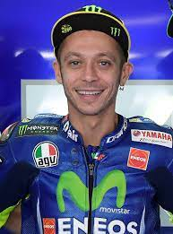

TIMELINE
1979
Rossi was born in Urbino, in the Marche region of Italy and when a child the family
moved to Tavullia
1996
The 1996 championship season marks the debut of Rossi in grand prix motorcycle racing.
1997
He won the 1997 125cc title, winning 11 of the 15 races with 321 points.
1999
World Champion 250cc. In 1999, he won the title, collecting five pole positions and nine wins.
2001
Rossi won his first 500 cc World Championship in 2001, winning 11 races in the final year of that class.
2002
4th title Moto GP.
2003
5th title Moto GP
2004
6th title Moto GP
2005
7th title Moto GP
2008
8th title Moto GP
2009
9th title Moto GP
2021
On 5 August 2021, he announced that he would retire from MotoGP after the 2021 season.
| IN A NUTSHELL  | |
|---|---|
| Born | 16 February 1979 Urbino, Italy |
| Occupation | Italian former professional motorcycle road racer |
| Manufacturers | Honda (2000–2003)
Yamaha (2004–2010, 2013–2021) Ducati (2011–2012) |
| Championships | 7 (2001, 2002, 2003, 2004, 2005,2008,2009) |